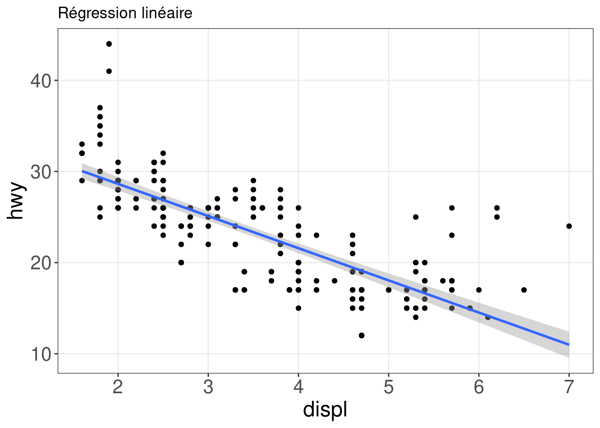
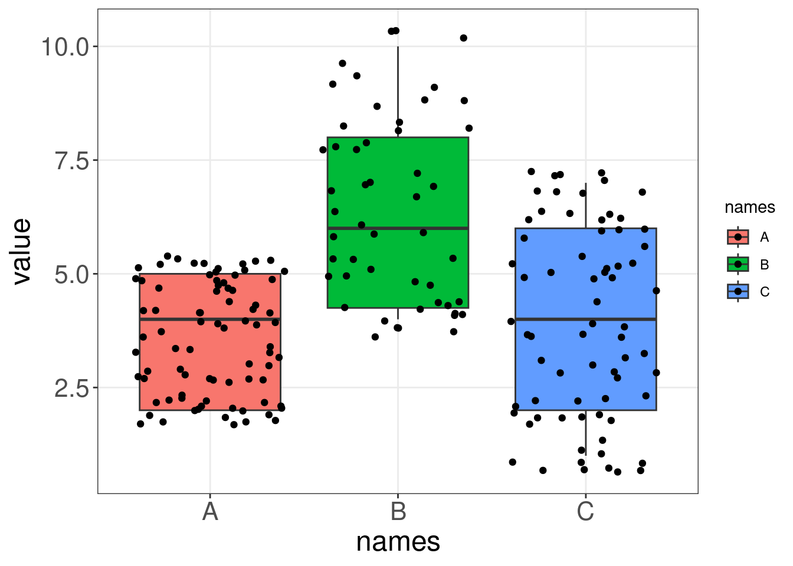
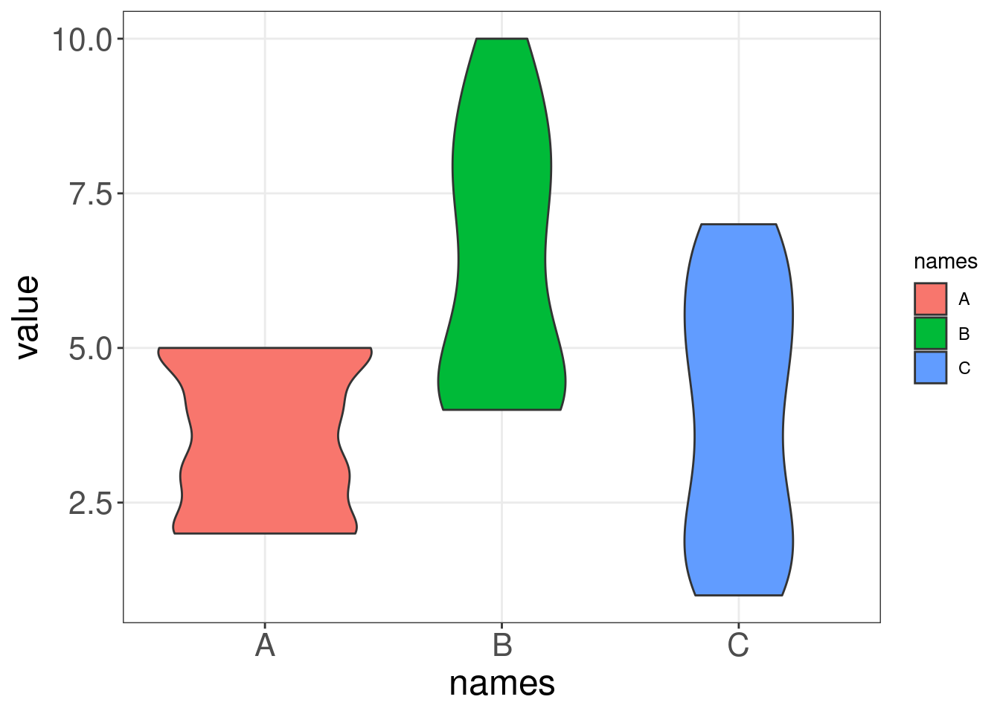
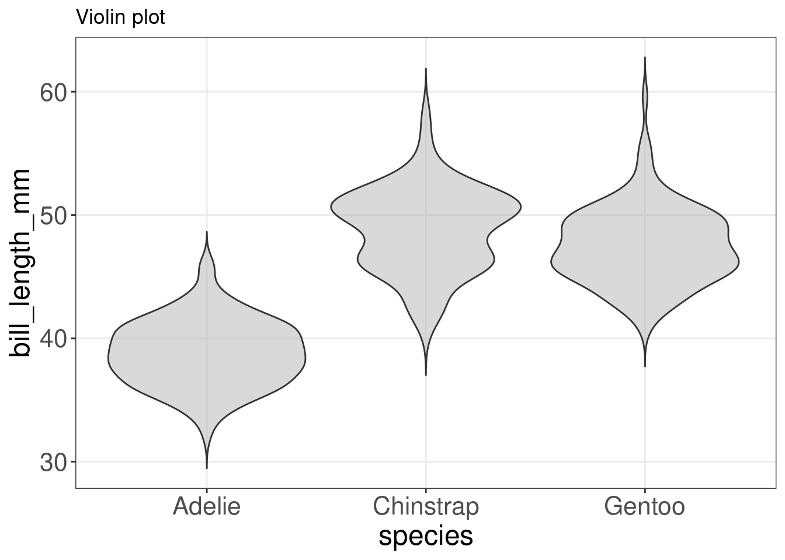
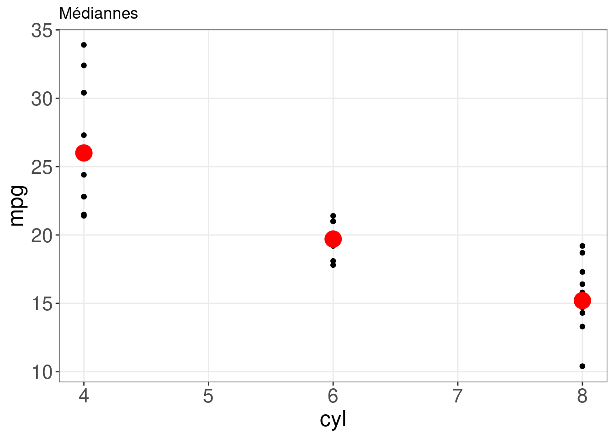
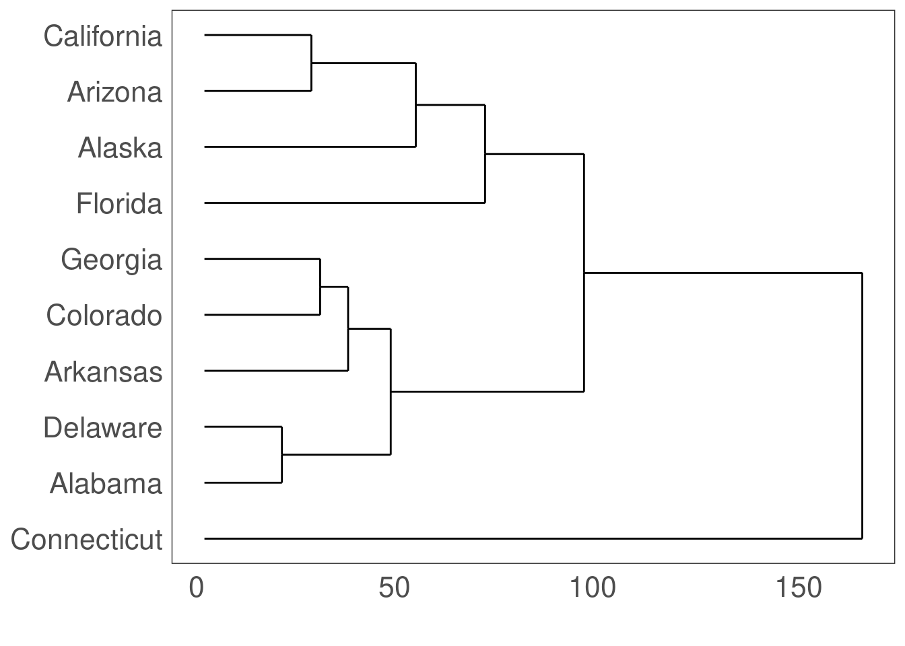

Chapitre 13 Utiliser geom_*() pour créer différents types de graphique
Plusieurs geoms peuvent être utilisés ensemble dans un seul graphique ! L’ordre détermine comment ils se superposent.

Voici un graphique vide, avant que nous n’ajoutions des geom_* pour représenter les variables de notre jeu de données.
ggplot(penguins)
13.1 Histogrammes: geom_histogram()
Un histogramme est une représentation graphique précise de la distribution de données numériques. Il n’y a qu’une seule esthétique requise: la variable x.
ggplot(penguins, aes(x = bill_length_mm)) + geom_histogram() +
ggtitle("Histogramme de la longeur des becs")13.2 Nuage de points et régression linéaire: geom_point() et geom_smooth()
Un nuage de points est un excellent moyen de visualiser des points de données pour deux variables. Deux esthétiques sont requises dans geom_point(): les variables x et y.
ggplot(mpg, aes(x = displ, y = hwy)) + geom_point() + labs(title = "Nuage de points")Il peut cependant être difficile de discerner toute relation potentielle dans un nuage de points. Vous pouvez utiliser geom_smooth() pour ajuster une ligne à travers vos données avec une variété de méthodes. Ici, nous allons ajouter une régression linéaire au nuage de points.
ggplot(mpg, aes(x = displ, y = hwy)) + geom_point() + geom_smooth(method = lm) +
labs(title = "Régression linéaire")
13.3 Diagramme en boîte: geom_boxplot():
Les diagrammes en boîte (ou boxplot) sont un moyen populaire de représenter la distribution des données en fonction d’une variable qualitative, comme les espèces. Vous pouvez spécifier cette variable dans aes() en utilisant group =, ou l’esthétique utilisée pour représenter les données (fill =, col =, shape =) dans le boxplot.
ggplot(data = penguins,
aes(x = species,
y = bill_length_mm,
fill = species)) + # définir espèce comme variable de groupe (par couleur)
geom_boxplot() +
labs(title = "Boxplot")Bien que les diagrammes en boîte soient très populaires pour résumer les données, quelqu’un qui regarde votre graphique peut ne pas comprendre intuitivement comment fonctionne ce résumé et ce qu’il peut masquer. Pour bien utiliser les diagrammes en boîte, il faut en comprendre la composition, comme illustré ci-dessous. Plus d’informations sur les inconvénients des diagrammes en boîte se trouvent ici.
.](images/boxplot_explain.png)
Figure 13.1: Composition d’un diagramme en boîte by Denise Coleman.
13.4 Diagramme en boîte avec annotations: geom_boxplot() and geom_signif()
Pour guider l’interprétation des diagrammes en boîte, nous pouvons ajouter des annotations avec geom_signif(). La fonction geom_signif() calcule la significativité d’une différence entre les groupes et ajoute l’annotation au graphique en une seule ligne de code.
library(ggsignif)
ggplot(data = penguins,
aes(x = species,
y= bill_length_mm,
fill = species)) +
geom_boxplot() +
geom_signif(
# which groups should be compared?
comparisons = list(c("Adelie", "Gentoo")),
map_signif_level=TRUE)13.5 Diagramme en violon: geom_violin()
Comme les diagrammes en boîte, les diagrammes en violon visualisent la distribution d’une variable numérique pour un ou plusieurs groupes. Cependant, la forme d’un violon représente la distribution des points qui est masquée dans le résumé d’un boxplot, ce qui permet une représentation plus précise des données (Data-to-Viz)).
Comparons un diagramme en boîte et un diagramme en violon sur des données générées. Remarquez comment le diagramme en violon montre l’étendue et la variabilité de nos données, alors que le diagramme en boîte ne peut pas communiquer ces deux éléments de manière aussi intuitive.
## Warning: `qplot()` was deprecated in ggplot2 3.4.0.
## This warning is displayed once every 8 hours.
## Call `lifecycle::last_lifecycle_warnings()` to see where this warning was
## generated.

On peut faire un diagramme en violin avec nos données penguins:
violin <- ggplot(data = penguins,
aes(x = species,
y = bill_length_mm)) +
geom_violin(trim = FALSE, # ne pas tailler les extrémités des violons s'il y a des valeurs extrêmes
fill = "grey70", # mettre tous les violons en gris
alpha = .5) + # transparence de la couleur de remplissage
labs(title = "Violin plot")
violin
Bien que nous ayons une bonne idée de la façon dont les données sont distribuées, nous pouvons améliorer le graphique en visualisant certaines statistiques sommaires et les points de données. Traçons un boxplot et les points de données sur notre graphique de violon avec geom_violin() + geom_boxplot() + geom_jitter().
violin + # ce geom trace les points de données avec un peu de bruit supplémentaire (horizontal) pour voir les points qui se chevauchent violin
violin + # ce geom trace les points de données avec un peu de bruit supplémentaire (horizontal) pour voir les points qui se chevauchent +
violin + # ce geom trace les points de données avec un peu de bruit supplémentaire (horizontal) pour voir les points qui se chevauchent #
violin + # ce geom trace les points de données avec un peu de bruit supplémentaire (horizontal) pour voir les points qui se chevauchent ce
violin + # ce geom trace les points de données avec un peu de bruit supplémentaire (horizontal) pour voir les points qui se chevauchent geom
violin + # ce geom trace les points de données avec un peu de bruit supplémentaire (horizontal) pour voir les points qui se chevauchent trace
violin + # ce geom trace les points de données avec un peu de bruit supplémentaire (horizontal) pour voir les points qui se chevauchent les
violin + # ce geom trace les points de données avec un peu de bruit supplémentaire (horizontal) pour voir les points qui se chevauchent points
violin + # ce geom trace les points de données avec un peu de bruit supplémentaire (horizontal) pour voir les points qui se chevauchent de
violin + # ce geom trace les points de données avec un peu de bruit supplémentaire (horizontal) pour voir les points qui se chevauchent données
violin + # ce geom trace les points de données avec un peu de bruit supplémentaire (horizontal) pour voir les points qui se chevauchent avec
violin + # ce geom trace les points de données avec un peu de bruit supplémentaire (horizontal) pour voir les points qui se chevauchent un
violin + # ce geom trace les points de données avec un peu de bruit supplémentaire (horizontal) pour voir les points qui se chevauchent peu
violin + # ce geom trace les points de données avec un peu de bruit supplémentaire (horizontal) pour voir les points qui se chevauchent de
violin + # ce geom trace les points de données avec un peu de bruit supplémentaire (horizontal) pour voir les points qui se chevauchent bruit
violin + # ce geom trace les points de données avec un peu de bruit supplémentaire (horizontal) pour voir les points qui se chevauchent supplémentaire
violin + # ce geom trace les points de données avec un peu de bruit supplémentaire (horizontal) pour voir les points qui se chevauchent (horizontal)
violin + # ce geom trace les points de données avec un peu de bruit supplémentaire (horizontal) pour voir les points qui se chevauchent pour
violin + # ce geom trace les points de données avec un peu de bruit supplémentaire (horizontal) pour voir les points qui se chevauchent voir
violin + # ce geom trace les points de données avec un peu de bruit supplémentaire (horizontal) pour voir les points qui se chevauchent les
violin + # ce geom trace les points de données avec un peu de bruit supplémentaire (horizontal) pour voir les points qui se chevauchent points
violin + # ce geom trace les points de données avec un peu de bruit supplémentaire (horizontal) pour voir les points qui se chevauchent qui
violin + # ce geom trace les points de données avec un peu de bruit supplémentaire (horizontal) pour voir les points qui se chevauchent se
violin + # ce geom trace les points de données avec un peu de bruit supplémentaire (horizontal) pour voir les points qui se chevauchent chevauchent
geom_jitter(shape = 16, position = position_jitter(0.2), alpha = 0.3) +
geom_boxplot(width = 0.05)13.6 Résumer des valeurs y: stat_summary()
L’ajout de statistiques sommaires à votre tracé peut aider à mettre en évidence le message clé de votre graphique. La fonction stat_summary() peut exécuter la statistique de votre choix en utilisant l’argument fun =, et l’ajouter à votre graphique selon le geom = que vous avez défini dans la fonction.
Par exemple, si nous voulions tracer la médiane du nombre de cylindres (cyl) dans l’ensemble de données mtcars, nous utiliserions stat_summary() de la manière suivante :
# tracer la médiane du nombre de cylindre
ggplot(mtcars, aes(x = cyl, y = mpg)) + geom_point() + stat_summary(fun = "median",
geom = "point", colour = "red", size = 6) + labs(title = "Médiannes")
Though the median is a helpful summary statistics, it does not inform us about the uncertainty behind it. If we wanted to instead plot the mean of each group with bootstrapped confidence intervals, we could just switch the fun.data = argument:
# Tracez la moyenne de chaque groupe avec des intervalles
# de confiance (par bootstrapping)
ggplot(mtcars, aes(cyl, mpg)) + geom_point() + stat_summary(fun.data = "mean_cl_boot",
colour = "red", size = 1.6) + labs(title = "Moyennes et intervalles de confiance")## Warning: Computation failed in `stat_summary()`
## Caused by error in `fun.data()`:
## ! The package "Hmisc" is required.Voir aussi geom_errorbar(), geom_pointrange(), geom_linerange(), geom_crossbar() afficher d’autres statistiques pour résumer vos données.
13.7 Créer des cartes: geom_map()
Nous allons cartographier les arrestations pour meurtres pour 100 000 habitants dans chacun des 50 états américains en 1973 à partir de la base de données USArrests avec geom_map().
# charger la librairie maps
library(maps)
states_map <- map_data("state") # obtient une carte des Etats-Unis à l'échelle des états
# Le nom de l'état est défini comme rownames. Créons une nouvelle colonne pour ceux-ci
# qui correspond à la colonne des noms d'états dans notre states_map.
USArrests$region <- tolower(rownames(USArrests))
# Construisons notre carte
ggplot(USArrests,
aes(map_id = region)) + # le nom de la variable pour lier notre carte et notre dataframe
geom_map(aes(fill = Murder), # variable que nous voulons représenter avec une esthétique
map = states_map) + # cadre de données qui contient des coordonnées
expand_limits(x = states_map$long,
y = states_map$lat) +
coord_map() + # projection
labs(x = "", y = "") # suppression des titres des axes
13.8 Graphique de densité: geom_density()
Un graphique de densité montre la distribution d’une variable numérique et ne prend en entrée qu’un ensemble de valeurs numériques.
(peng.dens <- ggplot(penguins, aes(x = bill_length_mm)) + geom_density())
(cars.dens <- ggplot(cars, aes(x = dist)) + geom_density())13.9 Dendogramme: ggdendrogram()
Quels états américains ont des taux d’arrestation similaires ?
library(ggdendro)
USArrests.short <- USArrests[1:10, ] # prendre un petit échantillon pour simplifier
hc <- hclust(dist(USArrests.short), "average") # regroupement par distance moyenne (UPGMA)## Warning in dist(USArrests.short): NAs introduced by coercion# visualiser le dendrogramme
ggdendrogram(hc, rotate = TRUE)